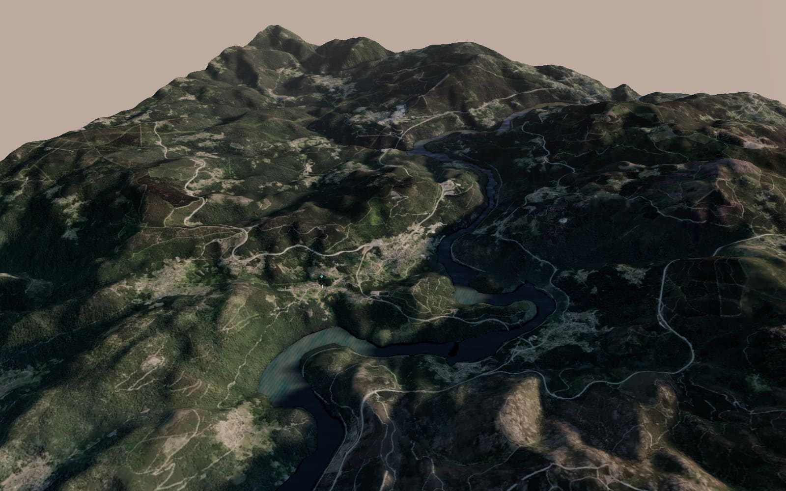

Relleno: la web antes de «Alrededor».

Cargando el relieve…
Ahora en O Pontillón…
Relieve MDT05 y ortofoto PNOA © Instituto Geográfico Nacional (CC BY 4.0). Lugares: © colaboradores de OpenStreetMap.